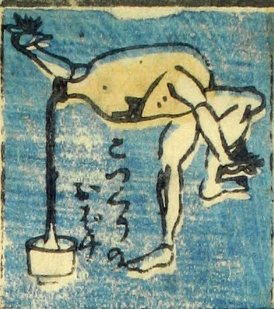

徳利；トックリ

徳利のお化け。徳利に腕と脚がついている。両腕を開いて片脚で立ち、注ぎ口を傾けて、下に置かれた猪口に酒のようなものを注いでいる。
著作者：芳盛／出典：親書誌：U426_nichibunken_0073：しん板化物尽し；シンパンバケモノヅクシ／日付：2006／資源識別子：U426_nichibunken_0073_0017_0000
Copyright (c)2010- International Research Center for Japanese Studies, Kyoto, Japan. All rights reserved.